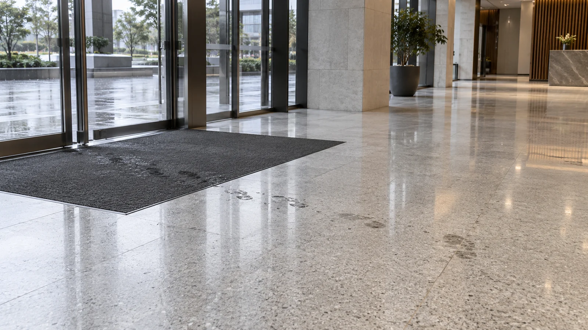
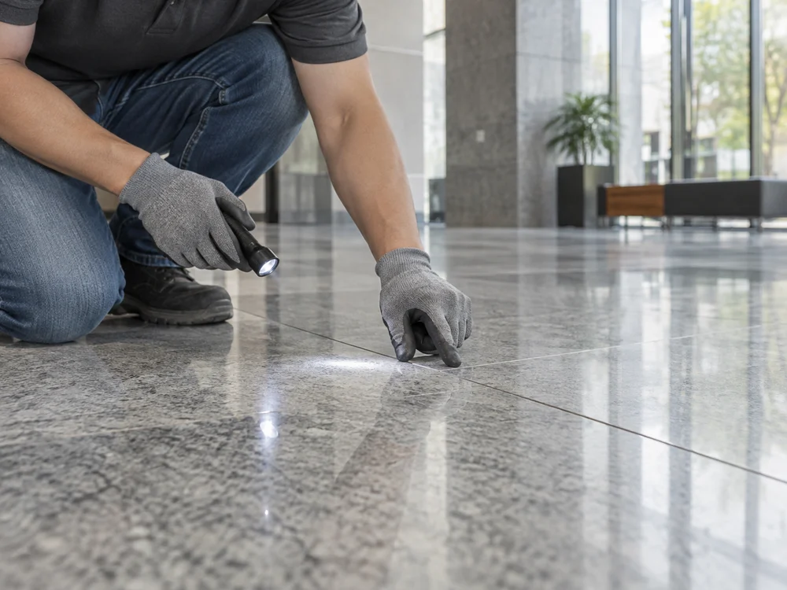
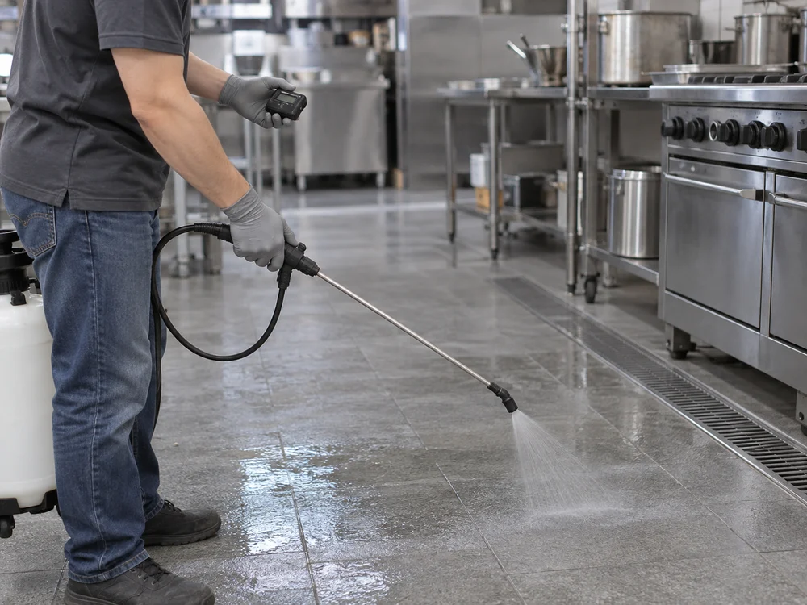
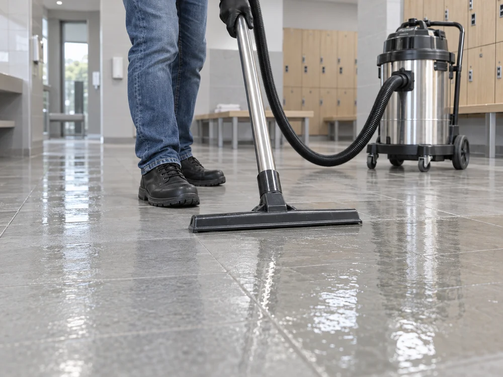

산업안전보건기준에 관한 규칙 제3조
작업장 바닥도
안전하게 유지해야 합니다.
근로자가 넘어지거나 미끄러질 위험이 없도록
바닥을 안전하고 청결한 상태로 관리해야 합니다.
안전·품질
미끄러짐의 위험을 살피고, 바닥에 맞는 효과를 만듭니다.
시설의 안전 관리부터 시공 품질과 약제 성분까지.
시설 운영자를 위한 바닥 안전
직원이 오가는 주방, 방문객이 걷는 로비.
주의 안내와 함께, 바닥의 위험을 줄이는 관리가 필요합니다.

매트 밖으로 이어지는 물기여러 방향으로 오가는 동선산업안전보건기준에 관한 규칙 제3조
근로자가 넘어지거나 미끄러질 위험이 없도록
바닥을 안전하고 청결한 상태로 관리해야 합니다.
중대재해처벌법 제4조
적용 대상 사업주·경영책임자에게는
재해 예방을 위한 안전·보건 확보 의무가 있습니다.
시설·사업장에 따라 법령의 적용 범위와 의무가 다릅니다. 미끄럼방지 시공은 바닥의 위험을 줄이는 방안 중 하나이며, 청소·배수·동선 관리와 함께 검토합니다.
정적마찰계수 · 동일한 타일 시료와 습윤 조건
같은 시험에서 값이 높을수록 미끄럼 저항이 큽니다.
수치는 해당 시료·시험 조건의 결과입니다. 시험방법과 건조 조건 결과는 기술·시험자료에서 확인할 수 있습니다.
무료 샘플 시공으로 미끄럼 변화와 색상·광택을 함께 확인한 뒤,
전체 시공 여부를 결정할 수 있습니다.
현장에 맞추는 시공 품질
재질도, 표면 상태도, 작업 환경도 다릅니다.
닥터 논슬립은 현장을 살피고, 반응을 관리하고, 마무리까지 확인합니다.

재질과 표면 마감, 오염 상태를 살펴 약제와 전처리 방법을 정합니다.

샘플 반응과 온도·건조 상태를 살피며 도포량과 반응 시간을 조절합니다.

잔여액을 중화·세척·회수하고 미끄럼 변화와 이용 시점을 확인합니다.
약제 성분 안전성
폼알데하이드·아세트알데하이드·벤젠
주요 유해물질 불검출 확인.
작업자와 이용자를 위한 안전 관리
약제가 필요한 구역에 작용하도록 관리하고,
마무리 후 바닥 상태와 이용 시점을 안내합니다.
장갑 등 보호구를 착용하고, 금속·벽면·집기를 보양합니다.
작업 구역에 이용자가 들어오지 않도록 구분하고, 환기 상태를 확인합니다.
반응이 끝난 약제와 오염을 마무리하고, 사용 전 바닥 상태를 확인합니다.
시공 구역의 상태와 이용 환경을 확인해
필요한 관리와 A/S를 안내합니다.